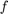
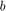
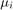
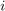
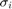
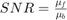
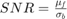
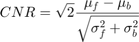
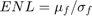

analyzeStats
analyzeStats returns a structure stats containing various statistics computed from the means , stds (standard deviations) and DRs (dynamic range) matrices (len X 4) . The new statistics are as follows.  stands for col 2 in the matrices (forground),  for col 1 (background),  is the mean of  and  is the standard deviation of .
This program assumes image files exported from Heidelberg Engineering software, and requires each image to be given both in segmented and unsegmented form.
Contents
Signal-Noise Ratio (SNR)
Given by both of the two definitions:
- 
- 
Contrast-Noise Ratio (CNR)
Given by

Effective Noise Level (ENL)
Given by

Copyright and License Notices
This file is part of "Assessing the Effect of Contact Lenses on the Image Quality of Retinal Spectral Domain Optical Coherence Tomography Using Automated Image Analysis" by Yinon Shapira, Talia Aviram, Omer Granak, Igor Viner, Erez Ribak, Eitan Z Blumenthal (2018).
Copyright © 2017, 2018 Omer Granek
This program is free software: you can redistribute it and/or modify it under the terms of the GNU General Public License as published by the Free Software Foundation, either version 3 of the License, or (at your option) any later version.
This program is distributed in the hope that it will be useful, but WITHOUT ANY WARRANTY; without even the implied warranty of MERCHANTABILITY or FITNESS FOR A PARTICULAR PURPOSE. See the GNU General Public License for more details.
You should have received a copy of the GNU General Public License along with this program. If not, see http://www.gnu.org/licenses/.
Code
function [ stats ] = analyzeStats( means, stds, DRs, len ) stds(isnan(stds)) = 0; %0s instead of NaNs means(isnan(means)) = 0; stdAll = sqrt(sum(stds.^2)); % global std: sum variances meanAll = mean(means); % global mean len = len + 1; stds(len,:) = stdAll; means(len,:) = meanAll; SNRs = zeros(2, len, 2); CNRs = zeros(2, len); ENLs = zeros(len, 2); for i = 1:2 k = i + 1; fMean = means(:,k); fStd = stds(:,k); bMean = means(:,1); bStd = stds(:,1); stdTot = sqrt(sum(stds(:,[1 k]).^2, 2)); SNRs(1,:,i) = fMean ./ bMean; SNRs(2,:,i) = fMean ./ bStd; ENLs(:,i) = fMean ./ fStd; end CNRs(1,:) = sqrt(2) * abs(fMean - bMean) ./ stdTot; stats = struct('means',means,'stds',stds,'SNRs',SNRs,'CNRs',CNRs,... 'ENLs',ENLs,'DRs',DRs); end